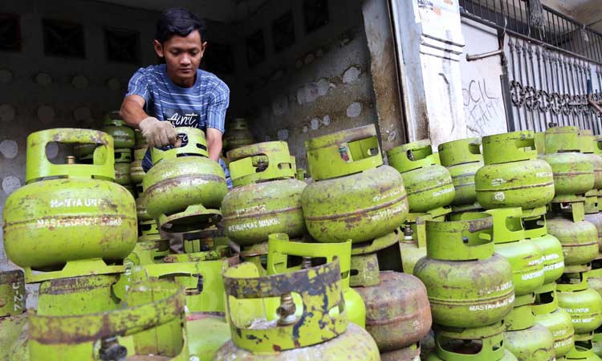

Penggunaan KTP dalam Pembelian LPG
Kebijakan penggunaan Kartu Tanda Penduduk (KTP) sebagai persyaratan dalam pembelian tabung Liquefied Petroleum Gas (LPG) telah menjadi subjek perdebatan yang intens. Meskipun pemerintah mengusulkan langkah ini sebagai upaya untuk mengendalikan distribusi dan memerangi penyalahgunaan LPG, banyak pihak merasa bahwa kebijakan ini dapat berdampak pada aksesibilitas dan privasi individu.
Manfaat Kewajiban Penggunaan KTP
Pengendalian Distribusi LPG: Salah satu manfaat utama dari kewajiban penggunaan KTP adalah potensi untuk membantu pemerintah mengendalikan distribusi LPG secara lebih efisien. Dengan data yang akurat, penyalahgunaan, penjualan ilegal, dan penyimpangan subsidi dapat ditekan, mengurangi beban keuangan negara.
Keamanan Nasional: Selain itu, penggunaan KTP juga dapat memiliki implikasi positif dalam konteks keamanan nasional. Dengan data yang tercatat, aktivitas mencurigakan, seperti pembelian LPG untuk keperluan ilegal, dapat dideteksi lebih awal, membantu mengurangi potensi ancaman terorisme yang selama ini menjadi keprihatinan utama.
Kendala dan Kontroversi
Aksesibilitas yang Terbatas: Meskipun memiliki manfaat, kebijakan ini juga menciptakan sejumlah kendala yang signifikan. Salah satu permasalahan utama adalah aksesibilitas. Di daerah terpencil dan untuk kelompok rentan seperti kaum miskin atau migran, memiliki KTP bisa menjadi tantangan tersendiri. Kebijakan ini berpotensi membatasi akses mereka yang memerlukan pasokan LPG, yang seharusnya merupakan kebutuhan dasar.
Isu Privasi: Sementara itu, isu privasi juga menjadi perhatian yang serius. Penggunaan KTP menciptakan kekhawatiran akan privasi individu. Dengan pemerintah memiliki akses ke data pribadi yang luas, risiko penyalahgunaan data dan pelanggaran privasi menjadi perhatian yang perlu diatasi dengan serius. Perlu adanya mekanisme yang kuat untuk melindungi data pribadi warga negara.
Mencari Solusi yang Tepat
Alternatif Identifikasi: Untuk mengatasi kendala aksesibilitas, pemerintah perlu mempertimbangkan solusi alternatif bagi mereka yang tidak memiliki KTP. Salah satu solusi yang dapat dipertimbangkan adalah memberikan opsi identifikasi lain yang sah. Ini bisa termasuk penggunaan dokumen lain yang sah, seperti surat izin tinggal sementara, agar masyarakat tidak kehilangan akses ke LPG yang sangat dibutuhkan.
Perlindungan Data: Selain itu, untuk menjaga privasi, diperlukan regulasi yang ketat dalam pengumpulan, penyimpanan, dan penggunaan data pribadi masyarakat. Pemerintah harus memastikan bahwa data yang terkumpul digunakan hanya untuk tujuan yang sah, dan adanya mekanisme perlindungan data yang efektif.
Pentingnya Diskusi Publik: Dalam menghadapi masalah kompleks ini, diskusi lebih lanjut dan keterlibatan publik akan menjadi kunci. Keputusan mengenai kebijakan ini harus dipertimbangkan dengan matang, dengan memperhatikan berbagai perspektif masyarakat. Forum diskusi, konsultasi, dan umpan balik dari publik harus menjadi bagian integral dalam perumusan kebijakan.
Kewajiban penggunaan KTP dalam pembelian LPG adalah kebijakan yang memiliki manfaat dan kendala yang perlu diperhitungkan dengan matang. Dalam mencari keseimbangan antara pengendalian distribusi LPG dan melindungi hak-hak individu, pemerintah harus mempertimbangkan dengan cermat semua aspek yang terlibat. Dengan melibatkan publik dalam proses pengambilan keputusan dan dengan menjaga privasi serta kepentingan masyarakat, kita dapat mencari solusi yang tepat untuk masalah ini. Dengan kesinambungan dialog dan pemikiran yang matang, kita dapat menghasilkan kebijakan yang adil, berkelanjutan, dan bermanfaat bagi semua pihak.